ITERATION 1
Give the canvas more room
Raised
The developers found the embedded canvas too cramped.
Changed
I added a way to maximize the canvas to full screen.
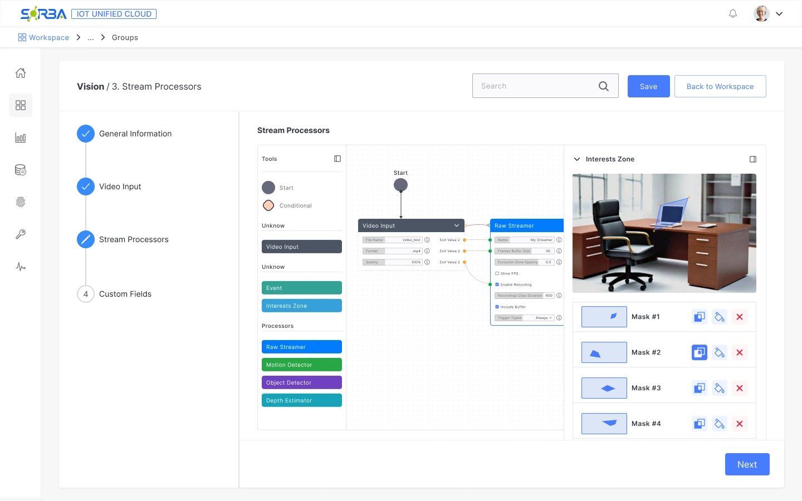
THE CANVAS INSIDE THE PAGE, WITH A SIDE PANEL OPEN
Case study 04 · Sorba.ai · IoT Unified Cloud
Designing a visual way to connect and configure computer vision workflows in IoT Unified.
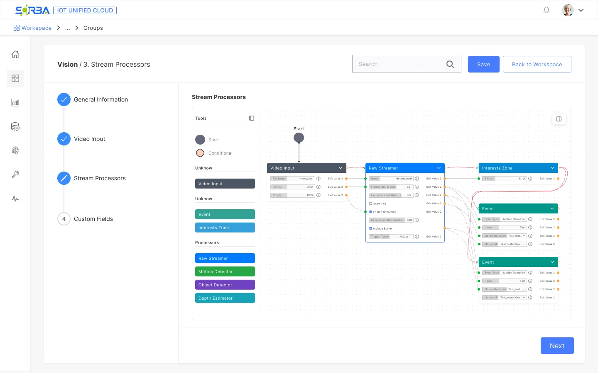
The challenge
A technical setup flow that hid how the pipeline connected.
The research
Studying node-based tools to find a visual configuration model.
The design
A guided flow with connected nodes and settings in context.
Context
IoT Unified is Sorba’s platform for managing IoT infrastructure. Its Vision node connects video sources, processes the stream and defines what the system should detect.
The design challenge was to make those connections and their configuration easier to understand.
My contribution
Problem
The previous setup used a long wizard of technical forms. Camera configuration alone had five sub-steps before Analytics and Custom Fields. Fields such as FPS, thresholds and hardware arguments appeared before users could see how the processing stages connected.
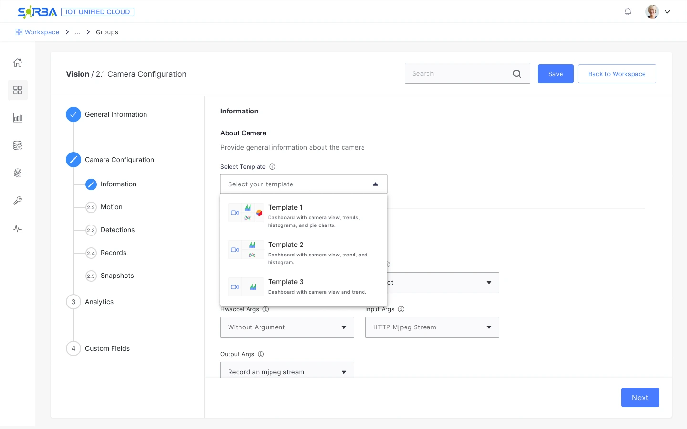
Before: camera configuration
Camera settings and technical arguments spread across form steps.
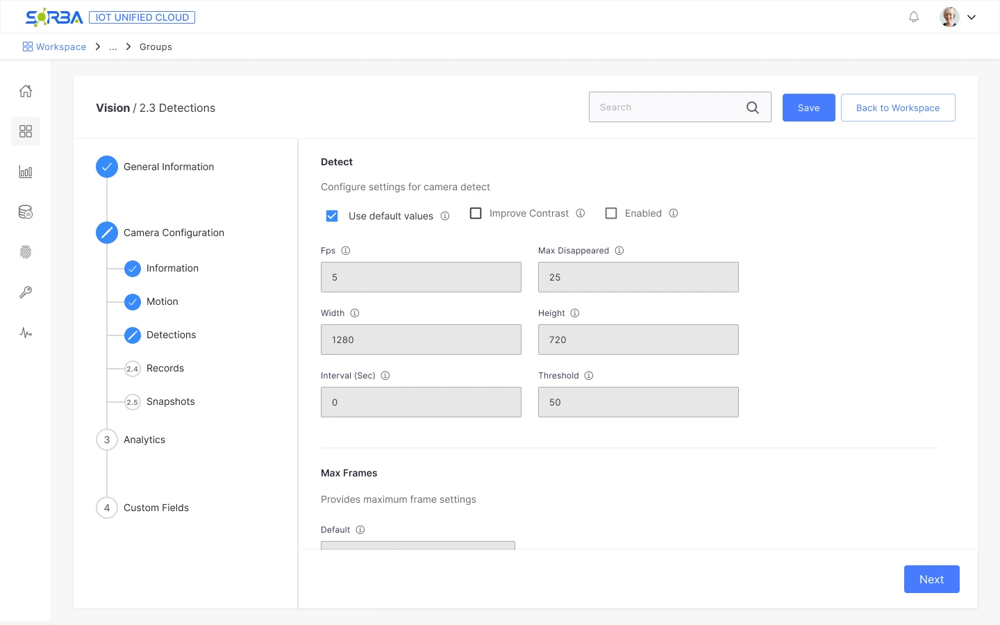
Before: detections
Processing parameters presented as isolated numeric fields.
Before
A fixed sequence of forms; camera setup alone took five sub-steps.
Technical fields up front: FPS, thresholds, hardware arguments.
Pipeline structure had to be inferred across form steps.
After
One canvas where the whole pipeline is visible as connected nodes.
Predefined nodes that users reconfigure instead of building from zero.
Contextual settings alongside the selected node.
Research
I needed a clearer way to connect video inputs, processing steps and their settings. I researched how other tools use nodes and graphs to make complex workflows visible. That search led me to Blender’s Shader Editor, NodeGraphQt and PixiEditor.
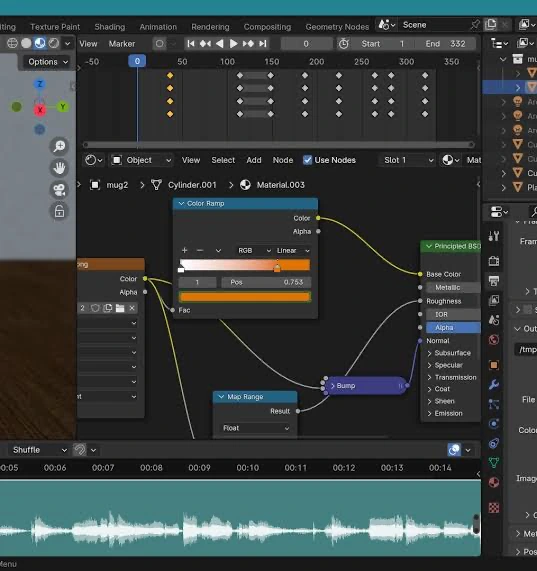
Blender · Shader Editor (opens in a new tab)
How visible links reveal the relationship between processing steps.
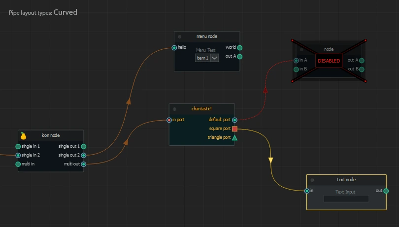
NodeGraphQt (opens in a new tab)
How input and output ports make connection points explicit.
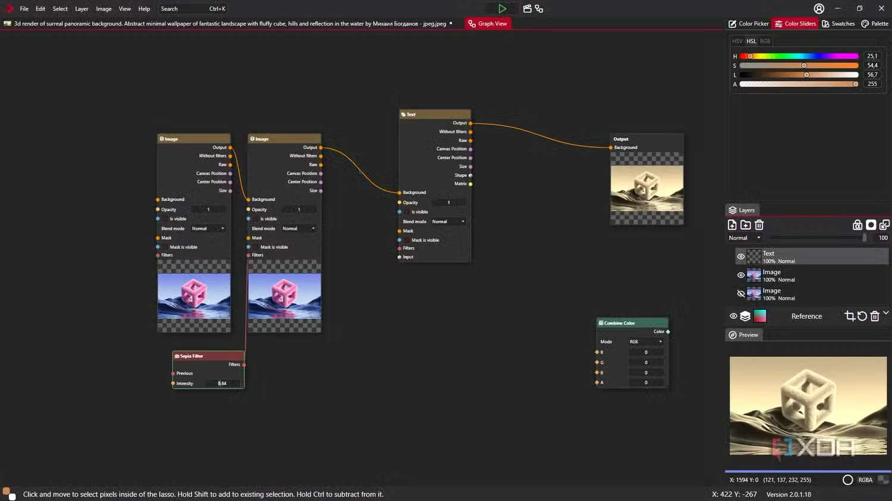
PixiEditor · Graph View (opens in a new tab)
How inputs, outputs and previews stay close to the graph.
What I adapted for Vision: a visible pipeline, predefined components and configuration in context.
01
Represent inputs, processors and events as connected nodes on one canvas.
02
Provide components such as Raw Streamer and Object Detector that users can configure.
03
Show the selected node’s settings beside the graph, while keeping the pipeline visible.
Reference screenshots: Blender, NodeGraphQt and PixiEditor. © their respective owners.
Solution
The canvas sits inside a four-step setup: General Information, Video Input, Stream Processors and Custom Fields. It makes the processing pipeline visible while retaining a guided path through the wider task.
Design decision / 01
Selecting a node opens its settings beside the graph. Buffer size, recording options and trigger types can be configured while the pipeline remains visible.
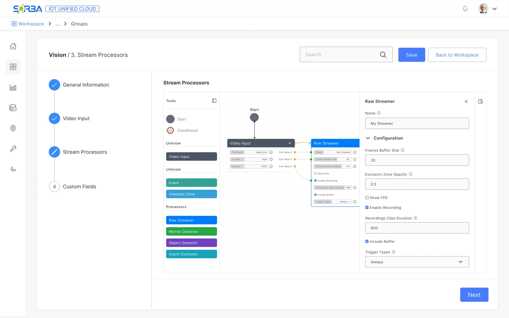
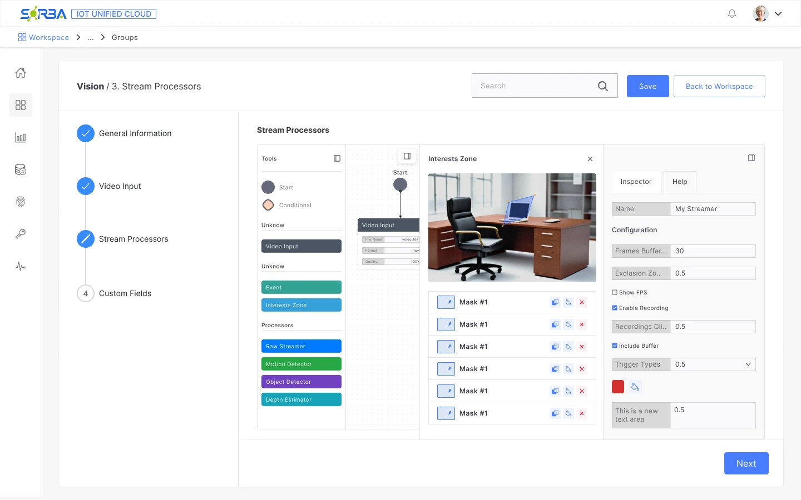
Design decision / 02
The Interests Zone editor lets users draw masks over the camera image and manage them alongside the node configuration.
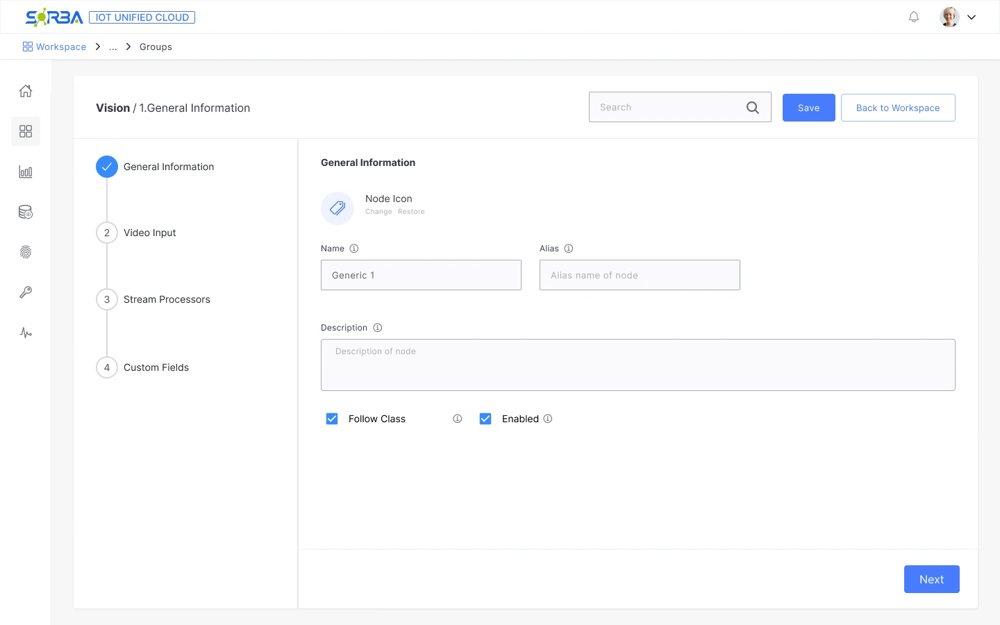
Keep the wider task guided
Four steps frame the canvas as one stage of setup, with the current stage visible.
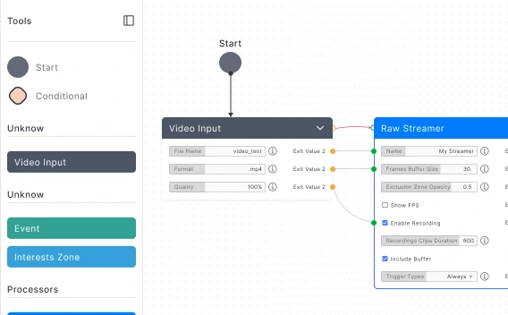
Make processing tools identifiable
Inputs, events and processors are grouped by type in a palette beside the canvas.
Iteration
I did not have access to end users for usability testing. I worked with developers through a loop of design, implementation, feedback and revision. Their feedback helped refine the interaction and what the team could build.
Explore interactions and map the configuration flow.
Work with developers to implement the flow.
Review the working interface and technical constraints.
Revise the design and repeat the loop.
ITERATION 1
Raised
The developers found the embedded canvas too cramped.
Changed
I added a way to maximize the canvas to full screen.

THE CANVAS INSIDE THE PAGE, WITH A SIDE PANEL OPEN
ITERATION 2
Raised
The interface needed to display two related forms at once.
Changed
I placed the forms side by side and added a close control to the second one. I checked feasibility with the developers before committing to the layout.
DESIGN AND DELIVERY
Technical conversations shaped the interactions before implementation.
Can a new user build a working pipeline using only predefined nodes?
Do people find the inspector and the tools palette where they expect them?
Is the canvas understandable to non-technical users, or does it need a simpler mode?
Developer feedback informed the design. These usability questions remain open.
Reflection
Vision launched after four months. Sales and support teams, who worked directly with clients, relayed positive feedback. Support reported good customer acceptance and said Vision was one of the products the team was promoting most actively. This was qualitative feedback; setup time and successful completion still need to be measured with users.
Bring users into the process earlier. Developer feedback helped refine feasibility, but user sessions are needed to understand whether the canvas works for people without a technical background.
This was my first project with nodes and graphs. Studying other tools helped me see how a canvas could make relationships and configuration visible in a web product.